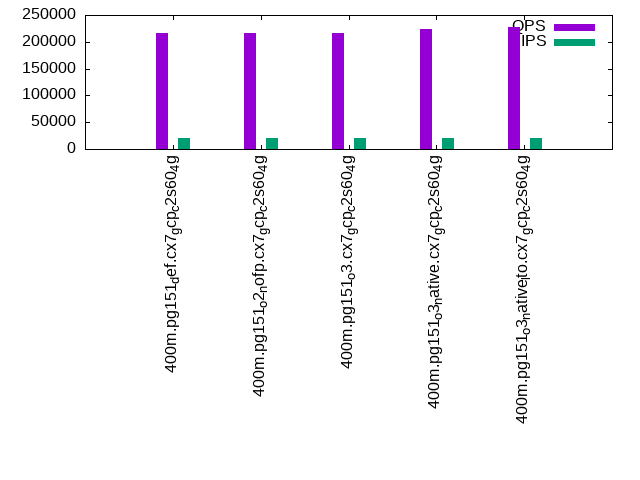

This is a report for the insert benchmark with 400M docs and 20 client(s). It is generated by scripts (bash, awk, sed) and Tufte might not be impressed. An overview of the insert benchmark is here and a short update is here. Below, by DBMS, I mean DBMS+version.config. An example is my8020.c10b40 where my means MySQL, 8020 is version 8.0.20 and c10b40 is the name for the configuration file.
The test server is a c2-standard-60 from GCP with 30 cores, hyperthreading disabled, 240G RAM and 3T from XFS and SW RAID 0 striped over 8 local NVMe drives. The benchmark was run with 20 clients and there were 1 or 2 connections per client (1 for queries, 1 for inserts). The benchmark loads 400M rows without secondary indexes, creates secondary indexes, loads another 400M rows then does 3 read+write tests for one hour each that do queries as fast as possible with 100, 500 and then 1000 writes/second/client concurrent with the queries. Each read-write test runs for 1800 seconds. The test was configured to use one table. The database fits in the OS page cache but not the DBMS buffer pool. Clients and the DBMS share one server. The per-database configs are in the per-database subdirectories here.
The tested DBMS are:
The numbers are inserts/s for l.i0 and l.i1, indexed docs (or rows) /s for l.x and queries/s for q*.2. The values are the average rate over the entire test for inserts (IPS) and queries (QPS). The range of values for IPS and QPS is split into 3 parts: bottom 25%, middle 50%, top 25%. Values in the bottom 25% have a red background, values in the top 25% have a green background and values in the middle have no color. A gray background is used for values that can be ignored because the DBMS did not sustain the target insert rate. Red backgrounds are not used when the minimum value is within 80% of the max value.
| dbms | l.i0 | l.x | l.i1 | q100.1 | q500.1 | q1000.1 |
|---|---|---|---|---|---|---|
| 400m.pg151_def.cx7_gcp_c2s60_4g | 1095890 | 295277 | 33330 | 188713 | 189832 | 215898 |
| 400m.pg151_o2_nofp.cx7_gcp_c2s60_4g | 1072386 | 292685 | 33381 | 186198 | 188907 | 216473 |
| 400m.pg151_o3.cx7_gcp_c2s60_4g | 1095890 | 293759 | 33506 | 188463 | 191652 | 217319 |
| 400m.pg151_o3_native.cx7_gcp_c2s60_4g | 1061008 | 303336 | 33375 | 193324 | 195197 | 223810 |
| 400m.pg151_o3_native_lto.cx7_gcp_c2s60_4g | 1104972 | 300150 | 33470 | 197081 | 199585 | 227015 |
This lists the average rate of inserts/s for the tests that do inserts concurrent with queries. For such tests the query rate is listed in the table above. The read+write tests are setup so that the insert rate should match the target rate every second. Cells that are not at least 95% of the target have a red background to indicate a failure to satisfy the target.
| dbms | q100.1 | q500.1 | q1000.1 |
|---|---|---|---|
| pg151_def.cx7_gcp_c2s60_4g | 1976 | 9885 | 19672 |
| pg151_o2_nofp.cx7_gcp_c2s60_4g | 1976 | 9885 | 19661 |
| pg151_o3.cx7_gcp_c2s60_4g | 1976 | 9885 | 19683 |
| pg151_o3_native.cx7_gcp_c2s60_4g | 1976 | 9885 | 19683 |
| pg151_o3_native_lto.cx7_gcp_c2s60_4g | 1976 | 9885 | 19683 |
| target | 2000 | 10000 | 20000 |
l.i0: load without secondary indexes. Graphs for performance per 1-second interval are here.
Average throughput:
Insert response time histogram: each cell has the percentage of responses that take <= the time in the header and max is the max response time in seconds. For the max column values in the top 25% of the range have a red background and in the bottom 25% of the range have a green background. The red background is not used when the min value is within 80% of the max value.
| dbms | 256us | 1ms | 4ms | 16ms | 64ms | 256ms | 1s | 4s | 16s | gt | max |
|---|---|---|---|---|---|---|---|---|---|---|---|
| pg151_def.cx7_gcp_c2s60_4g | 22.383 | 74.756 | 2.795 | 0.020 | 0.031 | 0.015 | 0.787 | ||||
| pg151_o2_nofp.cx7_gcp_c2s60_4g | 17.133 | 79.973 | 2.829 | 0.021 | 0.029 | 0.016 | 0.647 | ||||
| pg151_o3.cx7_gcp_c2s60_4g | 23.392 | 73.802 | 2.742 | 0.020 | 0.026 | 0.017 | 0.001 | 1.184 | |||
| pg151_o3_native.cx7_gcp_c2s60_4g | 20.862 | 75.763 | 3.309 | 0.023 | 0.029 | 0.015 | 0.001 | 1.330 | |||
| pg151_o3_native_lto.cx7_gcp_c2s60_4g | 28.125 | 68.867 | 2.944 | 0.023 | 0.022 | 0.017 | 0.001 | 1.273 |
Performance metrics for the DBMS listed above. Some are normalized by throughput, others are not. Legend for results is here.
ips qps rps rmbps wps wmbps rpq rkbpq wpi wkbpi csps cpups cspq cpupq dbgb1 dbgb2 rss maxop p50 p99 tag 1095890 0 199 4.3 2213.0 459.7 0.000 0.004 0.002 0.430 288352 57.5 0.263 16 43.0 112.7 NA 0.787 61432 8495 400m.pg151_def.cx7_gcp_c2s60_4g 1072386 0 134 4.8 2155.8 462.4 0.000 0.005 0.002 0.442 291600 58.1 0.272 16 43.0 113.7 NA 0.647 60056 9590 400m.pg151_o2_nofp.cx7_gcp_c2s60_4g 1095890 0 210 4.3 2223.4 464.5 0.000 0.004 0.002 0.434 286651 57.2 0.262 16 43.0 112.6 NA 1.184 61233 10788 400m.pg151_o3.cx7_gcp_c2s60_4g 1061008 0 144 4.5 2134.0 453.5 0.000 0.004 0.002 0.438 342807 56.7 0.323 16 43.0 113.8 NA 1.330 59035 4195 400m.pg151_o3_native.cx7_gcp_c2s60_4g 1104972 0 204 4.8 2258.8 464.8 0.000 0.004 0.002 0.431 321474 56.8 0.291 15 43.0 112.6 NA 1.273 61932 5194 400m.pg151_o3_native_lto.cx7_gcp_c2s60_4g
l.x: create secondary indexes.
Average throughput:
Performance metrics for the DBMS listed above. Some are normalized by throughput, others are not. Legend for results is here.
ips qps rps rmbps wps wmbps rpq rkbpq wpi wkbpi csps cpups cspq cpupq dbgb1 dbgb2 rss maxop p50 p99 tag 295277 0 2419 41.1 496.7 111.7 0.008 0.143 0.002 0.387 1805 3.3 0.006 3 78.3 162.0 0.0 0.003 NA NA 400m.pg151_def.cx7_gcp_c2s60_4g 292685 0 2696 40.7 459.3 105.3 0.009 0.142 0.002 0.369 1875 3.2 0.006 3 78.3 161.3 0.0 0.002 NA NA 400m.pg151_o2_nofp.cx7_gcp_c2s60_4g 293759 0 3218 41.5 495.6 110.0 0.011 0.145 0.002 0.383 2050 3.2 0.007 3 78.3 162.1 0.0 0.002 NA NA 400m.pg151_o3.cx7_gcp_c2s60_4g 303336 0 2898 43.1 475.4 108.3 0.010 0.146 0.002 0.366 1696 3.3 0.006 3 78.3 161.5 0.0 0.002 NA NA 400m.pg151_o3_native.cx7_gcp_c2s60_4g 300150 0 3117 43.3 506.1 114.9 0.010 0.148 0.002 0.392 2039 3.3 0.007 3 78.3 162.3 0.0 0.002 NA NA 400m.pg151_o3_native_lto.cx7_gcp_c2s60_4g
l.i1: continue load after secondary indexes created. Graphs for performance per 1-second interval are here.
Average throughput:
Insert response time histogram: each cell has the percentage of responses that take <= the time in the header and max is the max response time in seconds. For the max column values in the top 25% of the range have a red background and in the bottom 25% of the range have a green background. The red background is not used when the min value is within 80% of the max value.
| dbms | 256us | 1ms | 4ms | 16ms | 64ms | 256ms | 1s | 4s | 16s | gt | max |
|---|---|---|---|---|---|---|---|---|---|---|---|
| pg151_def.cx7_gcp_c2s60_4g | 0.056 | 5.758 | 88.748 | 5.437 | 0.001 | 0.392 | |||||
| pg151_o2_nofp.cx7_gcp_c2s60_4g | 0.045 | 5.754 | 88.815 | 5.384 | 0.001 | 0.488 | |||||
| pg151_o3.cx7_gcp_c2s60_4g | 0.055 | 5.852 | 88.767 | 5.324 | 0.002 | 0.350 | |||||
| pg151_o3_native.cx7_gcp_c2s60_4g | 0.054 | 5.765 | 88.782 | 5.398 | 0.002 | 0.675 | |||||
| pg151_o3_native_lto.cx7_gcp_c2s60_4g | 0.058 | 5.720 | 88.869 | 5.352 | 0.002 | 0.646 |
Performance metrics for the DBMS listed above. Some are normalized by throughput, others are not. Legend for results is here.
ips qps rps rmbps wps wmbps rpq rkbpq wpi wkbpi csps cpups cspq cpupq dbgb1 dbgb2 rss maxop p50 p99 tag 33330 0 71703 662.4 60612.4 582.3 2.151 20.350 1.819 17.888 128606 12.8 3.858 115 170.2 252.8 0.0 0.392 1698 700 400m.pg151_def.cx7_gcp_c2s60_4g 33381 0 71154 661.5 60765.1 583.1 2.132 20.293 1.820 17.888 128530 12.9 3.850 116 170.2 252.5 0.0 0.488 1698 749 400m.pg151_o2_nofp.cx7_gcp_c2s60_4g 33506 0 70694 658.0 60945.3 585.0 2.110 20.111 1.819 17.879 128752 12.8 3.843 115 170.2 251.9 0.0 0.350 1698 749 400m.pg151_o3.cx7_gcp_c2s60_4g 33375 0 71874 663.5 60752.8 582.9 2.154 20.357 1.820 17.883 129071 12.6 3.867 113 170.2 251.7 0.0 0.675 1698 749 400m.pg151_o3_native.cx7_gcp_c2s60_4g 33470 0 71636 663.3 60894.0 584.4 2.140 20.295 1.819 17.879 129469 12.5 3.868 112 170.2 250.2 0.0 0.646 1698 749 400m.pg151_o3_native_lto.cx7_gcp_c2s60_4g
q100.1: range queries with 100 insert/s per client. Graphs for performance per 1-second interval are here.
Average throughput:
Query response time histogram: each cell has the percentage of responses that take <= the time in the header and max is the max response time in seconds. For max values in the top 25% of the range have a red background and in the bottom 25% of the range have a green background. The red background is not used when the min value is within 80% of the max value.
| dbms | 256us | 1ms | 4ms | 16ms | 64ms | 256ms | 1s | 4s | 16s | gt | max |
|---|---|---|---|---|---|---|---|---|---|---|---|
| pg151_def.cx7_gcp_c2s60_4g | 99.905 | 0.091 | 0.002 | 0.001 | nonzero | nonzero | 0.154 | ||||
| pg151_o2_nofp.cx7_gcp_c2s60_4g | 99.903 | 0.094 | 0.002 | 0.001 | nonzero | nonzero | 0.154 | ||||
| pg151_o3.cx7_gcp_c2s60_4g | 99.901 | 0.096 | 0.002 | 0.001 | nonzero | 0.031 | |||||
| pg151_o3_native.cx7_gcp_c2s60_4g | 99.916 | 0.081 | 0.002 | 0.001 | nonzero | 0.028 | |||||
| pg151_o3_native_lto.cx7_gcp_c2s60_4g | 99.922 | 0.075 | 0.002 | 0.001 | nonzero | 0.027 |
Insert response time histogram: each cell has the percentage of responses that take <= the time in the header and max is the max response time in seconds. For max values in the top 25% of the range have a red background and in the bottom 25% of the range have a green background. The red background is not used when the min value is within 80% of the max value.
| dbms | 256us | 1ms | 4ms | 16ms | 64ms | 256ms | 1s | 4s | 16s | gt | max |
|---|---|---|---|---|---|---|---|---|---|---|---|
| pg151_def.cx7_gcp_c2s60_4g | 0.511 | 99.422 | 0.067 | 0.238 | |||||||
| pg151_o2_nofp.cx7_gcp_c2s60_4g | 0.739 | 99.147 | 0.101 | 0.013 | 0.572 | ||||||
| pg151_o3.cx7_gcp_c2s60_4g | 0.449 | 99.403 | 0.082 | 0.067 | 0.462 | ||||||
| pg151_o3_native.cx7_gcp_c2s60_4g | 0.644 | 99.354 | 0.001 | 0.065 | |||||||
| pg151_o3_native_lto.cx7_gcp_c2s60_4g | 0.504 | 99.431 | 0.065 | 0.184 |
Performance metrics for the DBMS listed above. Some are normalized by throughput, others are not. Legend for results is here.
ips qps rps rmbps wps wmbps rpq rkbpq wpi wkbpi csps cpups cspq cpupq dbgb1 dbgb2 rss maxop p50 p99 tag 1976 188713 3977 40.0 4127.1 51.4 0.021 0.217 2.089 26.623 674928 63.1 3.576 100 171.1 231.9 0.0 0.154 9413 8970 400m.pg151_def.cx7_gcp_c2s60_4g 1976 186198 3722 38.4 4125.7 52.3 0.020 0.211 2.088 27.088 667879 63.2 3.587 102 171.1 232.0 0.0 0.154 9317 8950 400m.pg151_o2_nofp.cx7_gcp_c2s60_4g 1976 188463 3823 38.8 4118.3 50.8 0.020 0.211 2.084 26.345 675213 63.1 3.583 100 171.1 232.6 0.0 0.031 9381 8966 400m.pg151_o3.cx7_gcp_c2s60_4g 1976 193324 3799 39.1 4121.2 50.9 0.020 0.207 2.086 26.372 691803 62.9 3.578 98 171.1 234.0 0.0 0.028 9653 9274 400m.pg151_o3_native.cx7_gcp_c2s60_4g 1976 197081 3925 39.2 4121.9 51.4 0.020 0.204 2.086 26.627 704162 62.6 3.573 95 171.1 232.4 0.0 0.027 9749 9338 400m.pg151_o3_native_lto.cx7_gcp_c2s60_4g
q500.1: range queries with 500 insert/s per client. Graphs for performance per 1-second interval are here.
Average throughput:
Query response time histogram: each cell has the percentage of responses that take <= the time in the header and max is the max response time in seconds. For max values in the top 25% of the range have a red background and in the bottom 25% of the range have a green background. The red background is not used when the min value is within 80% of the max value.
| dbms | 256us | 1ms | 4ms | 16ms | 64ms | 256ms | 1s | 4s | 16s | gt | max |
|---|---|---|---|---|---|---|---|---|---|---|---|
| pg151_def.cx7_gcp_c2s60_4g | 99.639 | 0.349 | 0.012 | 0.001 | nonzero | 0.033 | |||||
| pg151_o2_nofp.cx7_gcp_c2s60_4g | 99.634 | 0.354 | 0.012 | 0.001 | nonzero | 0.028 | |||||
| pg151_o3.cx7_gcp_c2s60_4g | 99.643 | 0.344 | 0.012 | 0.001 | nonzero | nonzero | 0.113 | ||||
| pg151_o3_native.cx7_gcp_c2s60_4g | 99.670 | 0.318 | 0.011 | 0.001 | nonzero | 0.030 | |||||
| pg151_o3_native_lto.cx7_gcp_c2s60_4g | 99.685 | 0.304 | 0.011 | 0.001 | nonzero | 0.027 |
Insert response time histogram: each cell has the percentage of responses that take <= the time in the header and max is the max response time in seconds. For max values in the top 25% of the range have a red background and in the bottom 25% of the range have a green background. The red background is not used when the min value is within 80% of the max value.
| dbms | 256us | 1ms | 4ms | 16ms | 64ms | 256ms | 1s | 4s | 16s | gt | max |
|---|---|---|---|---|---|---|---|---|---|---|---|
| pg151_def.cx7_gcp_c2s60_4g | 0.605 | 99.355 | 0.040 | 0.139 | |||||||
| pg151_o2_nofp.cx7_gcp_c2s60_4g | 0.579 | 99.395 | 0.021 | 0.006 | 0.338 | ||||||
| pg151_o3.cx7_gcp_c2s60_4g | 0.620 | 99.355 | 0.021 | 0.004 | 0.311 | ||||||
| pg151_o3_native.cx7_gcp_c2s60_4g | 0.691 | 99.292 | 0.016 | 0.206 | |||||||
| pg151_o3_native_lto.cx7_gcp_c2s60_4g | 0.674 | 99.282 | 0.044 | 0.188 |
Performance metrics for the DBMS listed above. Some are normalized by throughput, others are not. Legend for results is here.
ips qps rps rmbps wps wmbps rpq rkbpq wpi wkbpi csps cpups cspq cpupq dbgb1 dbgb2 rss maxop p50 p99 tag 9885 189832 17859 184.6 19527.7 208.3 0.094 0.996 1.976 21.576 659101 65.5 3.472 104 176.0 231.9 0.0 0.033 9445 8822 400m.pg151_def.cx7_gcp_c2s60_4g 9885 188907 17814 184.3 19528.1 208.2 0.094 0.999 1.976 21.566 655135 65.8 3.468 104 176.0 231.9 0.0 0.028 9413 8822 400m.pg151_o2_nofp.cx7_gcp_c2s60_4g 9885 191652 17751 184.3 19517.2 207.8 0.093 0.985 1.975 21.532 664434 65.7 3.467 103 176.0 229.4 0.0 0.113 9557 8934 400m.pg151_o3.cx7_gcp_c2s60_4g 9885 195197 17718 184.0 19518.5 207.4 0.091 0.965 1.975 21.483 677522 65.3 3.471 100 176.0 230.3 0.0 0.030 9716 9114 400m.pg151_o3_native.cx7_gcp_c2s60_4g 9885 199585 17868 184.6 19525.1 208.3 0.090 0.947 1.975 21.574 691791 65.4 3.466 98 176.0 229.6 0.0 0.027 9861 9206 400m.pg151_o3_native_lto.cx7_gcp_c2s60_4g
q1000.1: range queries with 1000 insert/s per client. Graphs for performance per 1-second interval are here.
Average throughput:
Query response time histogram: each cell has the percentage of responses that take <= the time in the header and max is the max response time in seconds. For max values in the top 25% of the range have a red background and in the bottom 25% of the range have a green background. The red background is not used when the min value is within 80% of the max value.
| dbms | 256us | 1ms | 4ms | 16ms | 64ms | 256ms | 1s | 4s | 16s | gt | max |
|---|---|---|---|---|---|---|---|---|---|---|---|
| pg151_def.cx7_gcp_c2s60_4g | 99.429 | 0.549 | 0.020 | 0.001 | nonzero | 0.061 | |||||
| pg151_o2_nofp.cx7_gcp_c2s60_4g | 99.438 | 0.540 | 0.020 | 0.001 | nonzero | 0.030 | |||||
| pg151_o3.cx7_gcp_c2s60_4g | 99.430 | 0.549 | 0.019 | 0.001 | nonzero | 0.049 | |||||
| pg151_o3_native.cx7_gcp_c2s60_4g | 99.478 | 0.502 | 0.019 | 0.001 | nonzero | nonzero | 0.064 | ||||
| pg151_o3_native_lto.cx7_gcp_c2s60_4g | 99.481 | 0.499 | 0.018 | 0.001 | nonzero | 0.053 |
Insert response time histogram: each cell has the percentage of responses that take <= the time in the header and max is the max response time in seconds. For max values in the top 25% of the range have a red background and in the bottom 25% of the range have a green background. The red background is not used when the min value is within 80% of the max value.
| dbms | 256us | 1ms | 4ms | 16ms | 64ms | 256ms | 1s | 4s | 16s | gt | max |
|---|---|---|---|---|---|---|---|---|---|---|---|
| pg151_def.cx7_gcp_c2s60_4g | 1.467 | 93.398 | 5.134 | nonzero | 0.409 | ||||||
| pg151_o2_nofp.cx7_gcp_c2s60_4g | 1.494 | 93.189 | 5.314 | 0.003 | 0.590 | ||||||
| pg151_o3.cx7_gcp_c2s60_4g | 1.555 | 93.223 | 5.222 | 0.242 | |||||||
| pg151_o3_native.cx7_gcp_c2s60_4g | 1.844 | 93.161 | 4.991 | 0.004 | 0.642 | ||||||
| pg151_o3_native_lto.cx7_gcp_c2s60_4g | 2.221 | 92.786 | 4.992 | 0.001 | 0.277 |
Performance metrics for the DBMS listed above. Some are normalized by throughput, others are not. Legend for results is here.
ips qps rps rmbps wps wmbps rpq rkbpq wpi wkbpi csps cpups cspq cpupq dbgb1 dbgb2 rss maxop p50 p99 tag 19672 215898 38044 385.2 37178.2 391.1 0.176 1.827 1.890 20.356 673262 69.7 3.118 97 189.4 261.2 0.0 0.061 10596 7996 400m.pg151_def.cx7_gcp_c2s60_4g 19661 216473 38310 387.1 37238.6 392.0 0.177 1.831 1.894 20.414 670293 69.9 3.096 97 189.4 261.2 0.0 0.030 10724 8204 400m.pg151_o2_nofp.cx7_gcp_c2s60_4g 19683 217319 39157 390.6 37279.2 392.4 0.180 1.841 1.894 20.412 677236 69.7 3.116 96 189.4 261.2 0.0 0.049 10692 8183 400m.pg151_o3.cx7_gcp_c2s60_4g 19683 223810 37754 383.7 37244.1 393.2 0.169 1.755 1.892 20.454 695022 69.8 3.105 94 189.4 261.2 0.0 0.064 11155 8311 400m.pg151_o3_native.cx7_gcp_c2s60_4g 19683 227015 37484 381.1 37350.3 391.6 0.165 1.719 1.898 20.371 707777 69.6 3.118 92 189.4 261.2 0.0 0.053 11305 8438 400m.pg151_o3_native_lto.cx7_gcp_c2s60_4g
l.i0: load without secondary indexes
Performance metrics for all DBMS, not just the ones listed above. Some are normalized by throughput, others are not. Legend for results is here.
ips qps rps rmbps wps wmbps rpq rkbpq wpi wkbpi csps cpups cspq cpupq dbgb1 dbgb2 rss maxop p50 p99 tag 1095890 0 199 4.3 2213.0 459.7 0.000 0.004 0.002 0.430 288352 57.5 0.263 16 43.0 112.7 NA 0.787 61432 8495 400m.pg151_def.cx7_gcp_c2s60_4g 1072386 0 134 4.8 2155.8 462.4 0.000 0.005 0.002 0.442 291600 58.1 0.272 16 43.0 113.7 NA 0.647 60056 9590 400m.pg151_o2_nofp.cx7_gcp_c2s60_4g 1095890 0 210 4.3 2223.4 464.5 0.000 0.004 0.002 0.434 286651 57.2 0.262 16 43.0 112.6 NA 1.184 61233 10788 400m.pg151_o3.cx7_gcp_c2s60_4g 1061008 0 144 4.5 2134.0 453.5 0.000 0.004 0.002 0.438 342807 56.7 0.323 16 43.0 113.8 NA 1.330 59035 4195 400m.pg151_o3_native.cx7_gcp_c2s60_4g 1104972 0 204 4.8 2258.8 464.8 0.000 0.004 0.002 0.431 321474 56.8 0.291 15 43.0 112.6 NA 1.273 61932 5194 400m.pg151_o3_native_lto.cx7_gcp_c2s60_4g
l.x: create secondary indexes
Performance metrics for all DBMS, not just the ones listed above. Some are normalized by throughput, others are not. Legend for results is here.
ips qps rps rmbps wps wmbps rpq rkbpq wpi wkbpi csps cpups cspq cpupq dbgb1 dbgb2 rss maxop p50 p99 tag 295277 0 2419 41.1 496.7 111.7 0.008 0.143 0.002 0.387 1805 3.3 0.006 3 78.3 162.0 0.0 0.003 NA NA 400m.pg151_def.cx7_gcp_c2s60_4g 292685 0 2696 40.7 459.3 105.3 0.009 0.142 0.002 0.369 1875 3.2 0.006 3 78.3 161.3 0.0 0.002 NA NA 400m.pg151_o2_nofp.cx7_gcp_c2s60_4g 293759 0 3218 41.5 495.6 110.0 0.011 0.145 0.002 0.383 2050 3.2 0.007 3 78.3 162.1 0.0 0.002 NA NA 400m.pg151_o3.cx7_gcp_c2s60_4g 303336 0 2898 43.1 475.4 108.3 0.010 0.146 0.002 0.366 1696 3.3 0.006 3 78.3 161.5 0.0 0.002 NA NA 400m.pg151_o3_native.cx7_gcp_c2s60_4g 300150 0 3117 43.3 506.1 114.9 0.010 0.148 0.002 0.392 2039 3.3 0.007 3 78.3 162.3 0.0 0.002 NA NA 400m.pg151_o3_native_lto.cx7_gcp_c2s60_4g
l.i1: continue load after secondary indexes created
Performance metrics for all DBMS, not just the ones listed above. Some are normalized by throughput, others are not. Legend for results is here.
ips qps rps rmbps wps wmbps rpq rkbpq wpi wkbpi csps cpups cspq cpupq dbgb1 dbgb2 rss maxop p50 p99 tag 33330 0 71703 662.4 60612.4 582.3 2.151 20.350 1.819 17.888 128606 12.8 3.858 115 170.2 252.8 0.0 0.392 1698 700 400m.pg151_def.cx7_gcp_c2s60_4g 33381 0 71154 661.5 60765.1 583.1 2.132 20.293 1.820 17.888 128530 12.9 3.850 116 170.2 252.5 0.0 0.488 1698 749 400m.pg151_o2_nofp.cx7_gcp_c2s60_4g 33506 0 70694 658.0 60945.3 585.0 2.110 20.111 1.819 17.879 128752 12.8 3.843 115 170.2 251.9 0.0 0.350 1698 749 400m.pg151_o3.cx7_gcp_c2s60_4g 33375 0 71874 663.5 60752.8 582.9 2.154 20.357 1.820 17.883 129071 12.6 3.867 113 170.2 251.7 0.0 0.675 1698 749 400m.pg151_o3_native.cx7_gcp_c2s60_4g 33470 0 71636 663.3 60894.0 584.4 2.140 20.295 1.819 17.879 129469 12.5 3.868 112 170.2 250.2 0.0 0.646 1698 749 400m.pg151_o3_native_lto.cx7_gcp_c2s60_4g
q100.1: range queries with 100 insert/s per client
Performance metrics for all DBMS, not just the ones listed above. Some are normalized by throughput, others are not. Legend for results is here.
ips qps rps rmbps wps wmbps rpq rkbpq wpi wkbpi csps cpups cspq cpupq dbgb1 dbgb2 rss maxop p50 p99 tag 1976 188713 3977 40.0 4127.1 51.4 0.021 0.217 2.089 26.623 674928 63.1 3.576 100 171.1 231.9 0.0 0.154 9413 8970 400m.pg151_def.cx7_gcp_c2s60_4g 1976 186198 3722 38.4 4125.7 52.3 0.020 0.211 2.088 27.088 667879 63.2 3.587 102 171.1 232.0 0.0 0.154 9317 8950 400m.pg151_o2_nofp.cx7_gcp_c2s60_4g 1976 188463 3823 38.8 4118.3 50.8 0.020 0.211 2.084 26.345 675213 63.1 3.583 100 171.1 232.6 0.0 0.031 9381 8966 400m.pg151_o3.cx7_gcp_c2s60_4g 1976 193324 3799 39.1 4121.2 50.9 0.020 0.207 2.086 26.372 691803 62.9 3.578 98 171.1 234.0 0.0 0.028 9653 9274 400m.pg151_o3_native.cx7_gcp_c2s60_4g 1976 197081 3925 39.2 4121.9 51.4 0.020 0.204 2.086 26.627 704162 62.6 3.573 95 171.1 232.4 0.0 0.027 9749 9338 400m.pg151_o3_native_lto.cx7_gcp_c2s60_4g
q500.1: range queries with 500 insert/s per client
Performance metrics for all DBMS, not just the ones listed above. Some are normalized by throughput, others are not. Legend for results is here.
ips qps rps rmbps wps wmbps rpq rkbpq wpi wkbpi csps cpups cspq cpupq dbgb1 dbgb2 rss maxop p50 p99 tag 9885 189832 17859 184.6 19527.7 208.3 0.094 0.996 1.976 21.576 659101 65.5 3.472 104 176.0 231.9 0.0 0.033 9445 8822 400m.pg151_def.cx7_gcp_c2s60_4g 9885 188907 17814 184.3 19528.1 208.2 0.094 0.999 1.976 21.566 655135 65.8 3.468 104 176.0 231.9 0.0 0.028 9413 8822 400m.pg151_o2_nofp.cx7_gcp_c2s60_4g 9885 191652 17751 184.3 19517.2 207.8 0.093 0.985 1.975 21.532 664434 65.7 3.467 103 176.0 229.4 0.0 0.113 9557 8934 400m.pg151_o3.cx7_gcp_c2s60_4g 9885 195197 17718 184.0 19518.5 207.4 0.091 0.965 1.975 21.483 677522 65.3 3.471 100 176.0 230.3 0.0 0.030 9716 9114 400m.pg151_o3_native.cx7_gcp_c2s60_4g 9885 199585 17868 184.6 19525.1 208.3 0.090 0.947 1.975 21.574 691791 65.4 3.466 98 176.0 229.6 0.0 0.027 9861 9206 400m.pg151_o3_native_lto.cx7_gcp_c2s60_4g
q1000.1: range queries with 1000 insert/s per client
Performance metrics for all DBMS, not just the ones listed above. Some are normalized by throughput, others are not. Legend for results is here.
ips qps rps rmbps wps wmbps rpq rkbpq wpi wkbpi csps cpups cspq cpupq dbgb1 dbgb2 rss maxop p50 p99 tag 19672 215898 38044 385.2 37178.2 391.1 0.176 1.827 1.890 20.356 673262 69.7 3.118 97 189.4 261.2 0.0 0.061 10596 7996 400m.pg151_def.cx7_gcp_c2s60_4g 19661 216473 38310 387.1 37238.6 392.0 0.177 1.831 1.894 20.414 670293 69.9 3.096 97 189.4 261.2 0.0 0.030 10724 8204 400m.pg151_o2_nofp.cx7_gcp_c2s60_4g 19683 217319 39157 390.6 37279.2 392.4 0.180 1.841 1.894 20.412 677236 69.7 3.116 96 189.4 261.2 0.0 0.049 10692 8183 400m.pg151_o3.cx7_gcp_c2s60_4g 19683 223810 37754 383.7 37244.1 393.2 0.169 1.755 1.892 20.454 695022 69.8 3.105 94 189.4 261.2 0.0 0.064 11155 8311 400m.pg151_o3_native.cx7_gcp_c2s60_4g 19683 227015 37484 381.1 37350.3 391.6 0.165 1.719 1.898 20.371 707777 69.6 3.118 92 189.4 261.2 0.0 0.053 11305 8438 400m.pg151_o3_native_lto.cx7_gcp_c2s60_4g
Insert response time histogram
256us 1ms 4ms 16ms 64ms 256ms 1s 4s 16s gt max tag 0.000 22.383 74.756 2.795 0.020 0.031 0.015 0.000 0.000 0.000 0.787 pg151_def.cx7_gcp_c2s60_4g 0.000 17.133 79.973 2.829 0.021 0.029 0.016 0.000 0.000 0.000 0.647 pg151_o2_nofp.cx7_gcp_c2s60_4g 0.000 23.392 73.802 2.742 0.020 0.026 0.017 0.001 0.000 0.000 1.184 pg151_o3.cx7_gcp_c2s60_4g 0.000 20.862 75.763 3.309 0.023 0.029 0.015 0.001 0.000 0.000 1.330 pg151_o3_native.cx7_gcp_c2s60_4g 0.000 28.125 68.867 2.944 0.023 0.022 0.017 0.001 0.000 0.000 1.273 pg151_o3_native_lto.cx7_gcp_c2s60_4g
TODO - determine whether there is data for create index response time
Insert response time histogram
256us 1ms 4ms 16ms 64ms 256ms 1s 4s 16s gt max tag 0.000 0.000 0.056 5.758 88.748 5.437 0.001 0.000 0.000 0.000 0.392 pg151_def.cx7_gcp_c2s60_4g 0.000 0.000 0.045 5.754 88.815 5.384 0.001 0.000 0.000 0.000 0.488 pg151_o2_nofp.cx7_gcp_c2s60_4g 0.000 0.000 0.055 5.852 88.767 5.324 0.002 0.000 0.000 0.000 0.350 pg151_o3.cx7_gcp_c2s60_4g 0.000 0.000 0.054 5.765 88.782 5.398 0.002 0.000 0.000 0.000 0.675 pg151_o3_native.cx7_gcp_c2s60_4g 0.000 0.000 0.058 5.720 88.869 5.352 0.002 0.000 0.000 0.000 0.646 pg151_o3_native_lto.cx7_gcp_c2s60_4g
Query response time histogram
256us 1ms 4ms 16ms 64ms 256ms 1s 4s 16s gt max tag 99.905 0.091 0.002 0.001 nonzero nonzero 0.000 0.000 0.000 0.000 0.154 pg151_def.cx7_gcp_c2s60_4g 99.903 0.094 0.002 0.001 nonzero nonzero 0.000 0.000 0.000 0.000 0.154 pg151_o2_nofp.cx7_gcp_c2s60_4g 99.901 0.096 0.002 0.001 nonzero 0.000 0.000 0.000 0.000 0.000 0.031 pg151_o3.cx7_gcp_c2s60_4g 99.916 0.081 0.002 0.001 nonzero 0.000 0.000 0.000 0.000 0.000 0.028 pg151_o3_native.cx7_gcp_c2s60_4g 99.922 0.075 0.002 0.001 nonzero 0.000 0.000 0.000 0.000 0.000 0.027 pg151_o3_native_lto.cx7_gcp_c2s60_4g
Insert response time histogram
256us 1ms 4ms 16ms 64ms 256ms 1s 4s 16s gt max tag 0.000 0.000 0.000 0.511 99.422 0.067 0.000 0.000 0.000 0.000 0.238 pg151_def.cx7_gcp_c2s60_4g 0.000 0.000 0.000 0.739 99.147 0.101 0.013 0.000 0.000 0.000 0.572 pg151_o2_nofp.cx7_gcp_c2s60_4g 0.000 0.000 0.000 0.449 99.403 0.082 0.067 0.000 0.000 0.000 0.462 pg151_o3.cx7_gcp_c2s60_4g 0.000 0.000 0.000 0.644 99.354 0.001 0.000 0.000 0.000 0.000 0.065 pg151_o3_native.cx7_gcp_c2s60_4g 0.000 0.000 0.000 0.504 99.431 0.065 0.000 0.000 0.000 0.000 0.184 pg151_o3_native_lto.cx7_gcp_c2s60_4g
Query response time histogram
256us 1ms 4ms 16ms 64ms 256ms 1s 4s 16s gt max tag 99.639 0.349 0.012 0.001 nonzero 0.000 0.000 0.000 0.000 0.000 0.033 pg151_def.cx7_gcp_c2s60_4g 99.634 0.354 0.012 0.001 nonzero 0.000 0.000 0.000 0.000 0.000 0.028 pg151_o2_nofp.cx7_gcp_c2s60_4g 99.643 0.344 0.012 0.001 nonzero nonzero 0.000 0.000 0.000 0.000 0.113 pg151_o3.cx7_gcp_c2s60_4g 99.670 0.318 0.011 0.001 nonzero 0.000 0.000 0.000 0.000 0.000 0.030 pg151_o3_native.cx7_gcp_c2s60_4g 99.685 0.304 0.011 0.001 nonzero 0.000 0.000 0.000 0.000 0.000 0.027 pg151_o3_native_lto.cx7_gcp_c2s60_4g
Insert response time histogram
256us 1ms 4ms 16ms 64ms 256ms 1s 4s 16s gt max tag 0.000 0.000 0.000 0.605 99.355 0.040 0.000 0.000 0.000 0.000 0.139 pg151_def.cx7_gcp_c2s60_4g 0.000 0.000 0.000 0.579 99.395 0.021 0.006 0.000 0.000 0.000 0.338 pg151_o2_nofp.cx7_gcp_c2s60_4g 0.000 0.000 0.000 0.620 99.355 0.021 0.004 0.000 0.000 0.000 0.311 pg151_o3.cx7_gcp_c2s60_4g 0.000 0.000 0.000 0.691 99.292 0.016 0.000 0.000 0.000 0.000 0.206 pg151_o3_native.cx7_gcp_c2s60_4g 0.000 0.000 0.000 0.674 99.282 0.044 0.000 0.000 0.000 0.000 0.188 pg151_o3_native_lto.cx7_gcp_c2s60_4g
Query response time histogram
256us 1ms 4ms 16ms 64ms 256ms 1s 4s 16s gt max tag 99.429 0.549 0.020 0.001 nonzero 0.000 0.000 0.000 0.000 0.000 0.061 pg151_def.cx7_gcp_c2s60_4g 99.438 0.540 0.020 0.001 nonzero 0.000 0.000 0.000 0.000 0.000 0.030 pg151_o2_nofp.cx7_gcp_c2s60_4g 99.430 0.549 0.019 0.001 nonzero 0.000 0.000 0.000 0.000 0.000 0.049 pg151_o3.cx7_gcp_c2s60_4g 99.478 0.502 0.019 0.001 nonzero nonzero 0.000 0.000 0.000 0.000 0.064 pg151_o3_native.cx7_gcp_c2s60_4g 99.481 0.499 0.018 0.001 nonzero 0.000 0.000 0.000 0.000 0.000 0.053 pg151_o3_native_lto.cx7_gcp_c2s60_4g
Insert response time histogram
256us 1ms 4ms 16ms 64ms 256ms 1s 4s 16s gt max tag 0.000 0.000 0.000 1.467 93.398 5.134 nonzero 0.000 0.000 0.000 0.409 pg151_def.cx7_gcp_c2s60_4g 0.000 0.000 0.000 1.494 93.189 5.314 0.003 0.000 0.000 0.000 0.590 pg151_o2_nofp.cx7_gcp_c2s60_4g 0.000 0.000 0.000 1.555 93.223 5.222 0.000 0.000 0.000 0.000 0.242 pg151_o3.cx7_gcp_c2s60_4g 0.000 0.000 0.000 1.844 93.161 4.991 0.004 0.000 0.000 0.000 0.642 pg151_o3_native.cx7_gcp_c2s60_4g 0.000 0.000 0.000 2.221 92.786 4.992 0.001 0.000 0.000 0.000 0.277 pg151_o3_native_lto.cx7_gcp_c2s60_4g